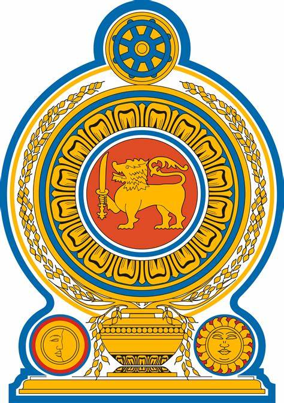
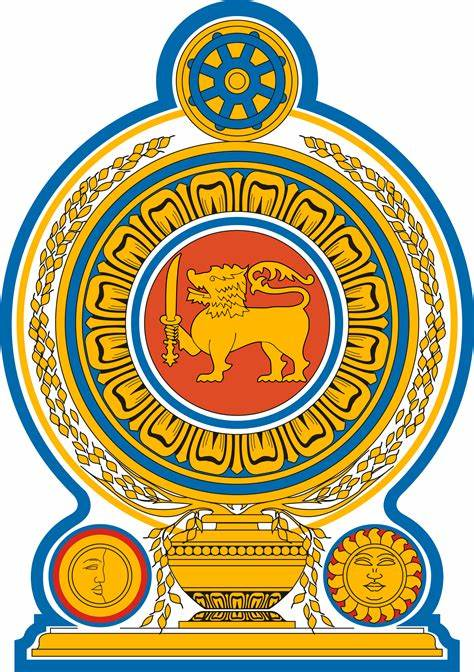

|  |  |
|  | |
PASSPORTS
|
RTI
|
CONTACT US
|
General Provisions for Sri Lankan Citizenship
Citizenship Division offers you the services of registering your overseas born child/ children, renouncing Sri Lankan Citizenship, or registering person as a Sri Lankan Dual Citizen.
Applications are accepted by Citizenship Division (Level 04 - Wing D) at the Department of Immigration and Emigration Head Office.
Working Hours: Monday to Friday except Public holidays
Applications are accepted from 9.00a.m to 2.30 p.m.
Special Provisions for Sri Lankan Citizenship
Applications are accepted at Indo - Lanka Citizenship Division (Level 06 – Wing D) at the Head Office of Department of Immigration and Emigration.
Working Hours : Monday to Friday except Public Holidays.
Applications for Registration /Citizenship confirmation certificates are accepted from 09.00 a.m. to 03.00 p.m.at the Indo - Lanka Citizenship Division.
|
"Dep. of Immigration and Emigration, "Suhurupaya", Sri Subhuthipura Road,Battaramulla." |
Have A Question |
Information |
Visit Us |
|||||
HOME ABOUT US CITIZENSHIP PASSPORTS RTI CONTACT US |
|
|